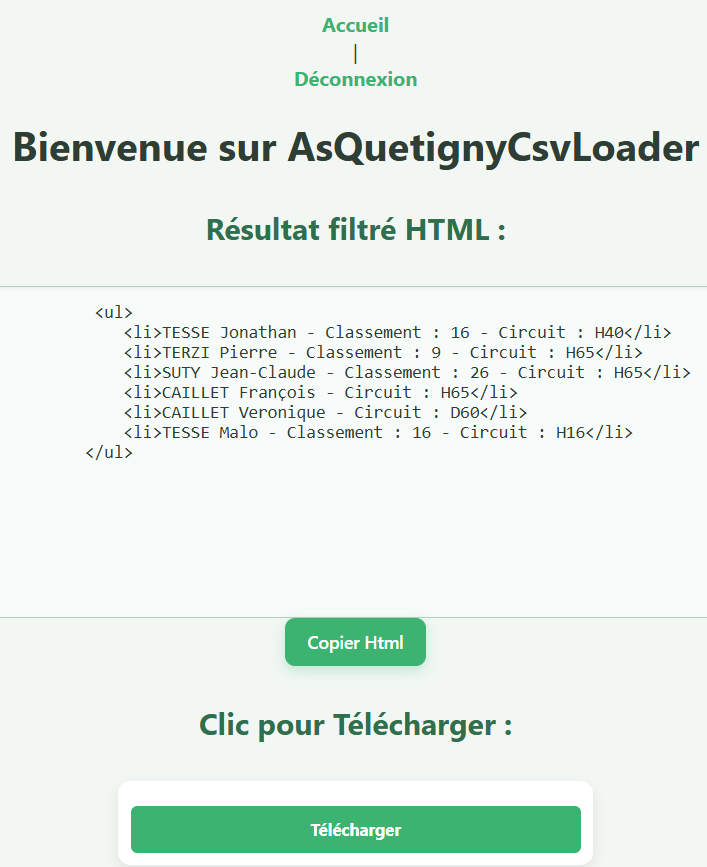
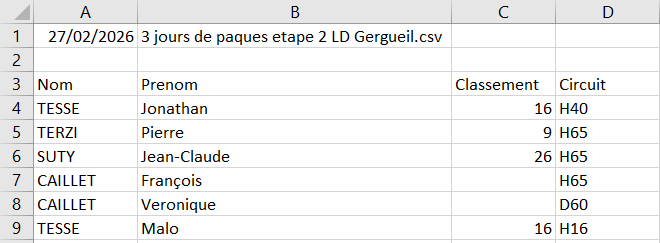

Dans le cadre de ma Licence Professionnelle Métiers de l’Informatique
– Applications Web, j’ai développé AsQuetignyCsvLoader, une application
web destinée au club de course d’orientation AsQuetigny.
L’objectif : automatiser l’extraction et la publication
des résultats de compétition, fournis sous forme de fichiers CSV souvent
hétérogènes.
Le projet répond à un besoin réel :
les bénévoles du club devaient auparavant parcourir
manuellement chaque fichier, identifier les licenciés et
reformater les données. L’application simplifie
entièrement ce processus.
ASQUETIGNY-CSV-LOADER
Fonctionnalités principales
- Import d’un fichier CSV via une interface simple.
- Détection dynamique des entêtes, même lorsque les noms de colonnes changent selon les compétitions.
- Normalisation automatique (encodage, casse, accents).
- Filtrage intelligent pour isoler uniquement les licenciés du club.
- Génération d’un affichage HTML propre, prêt à être publié sur le site du club.
- Sécurisation du traitement (validation du fichier, protection XSS).
Ce que j’ai appris
Ce projet m’a permis de renforcer mes compétences en :
- Développement PHP natif
- Manipulation de fichiers CSV et gestion d’encodages
- Architecture web sans base de données
- Analyse de besoin et travail avec un commanditaire réel
- Conception d’un système flexible capable de gérer des données hétérogènes
Intégration visuelle
Page de connexion :

Page d'accueil :

Page de resultat :

Fichier résultats filtrés .CSV :
